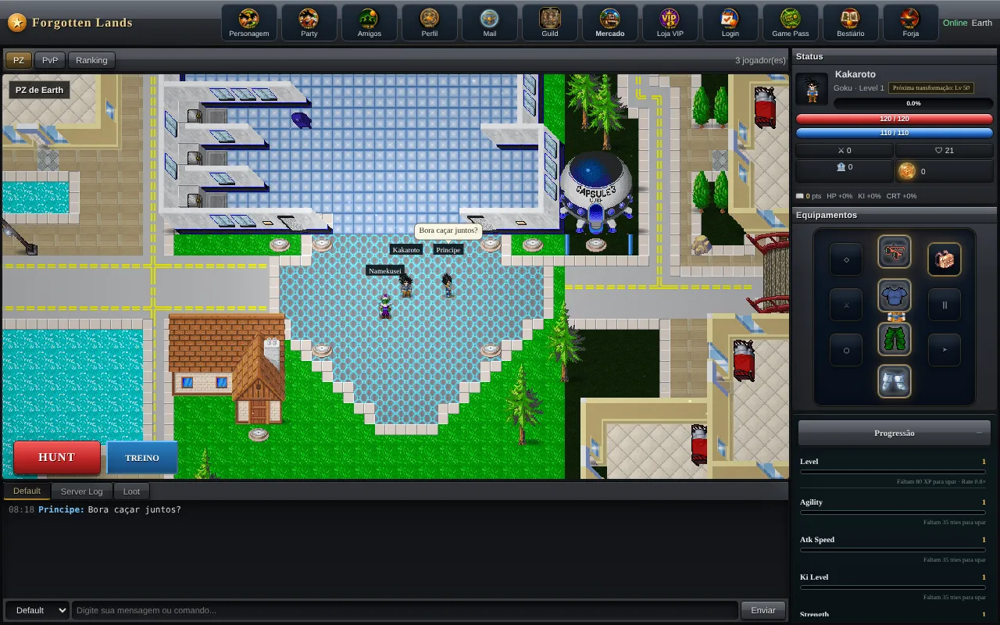
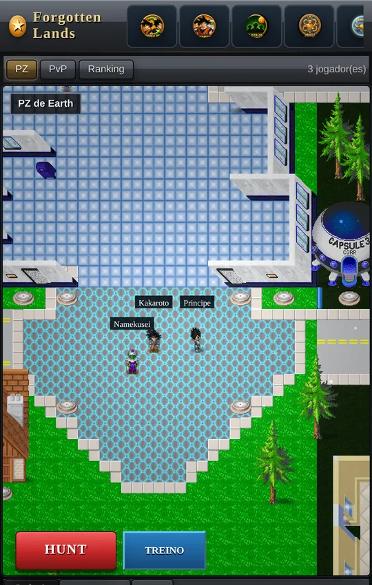
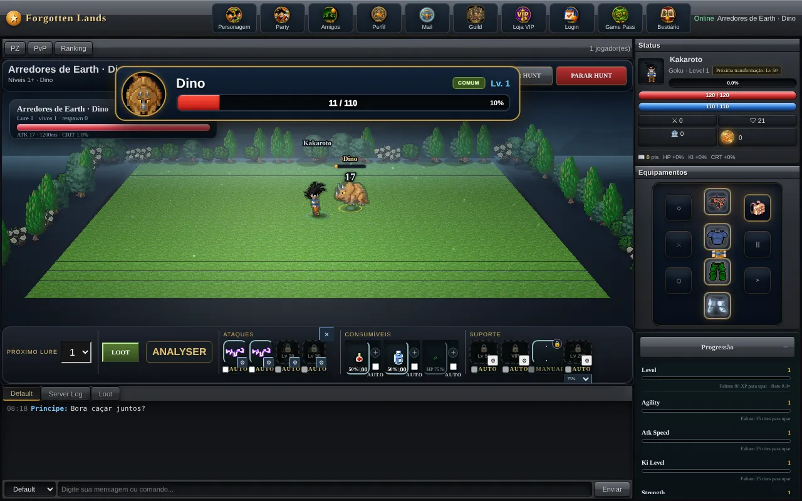
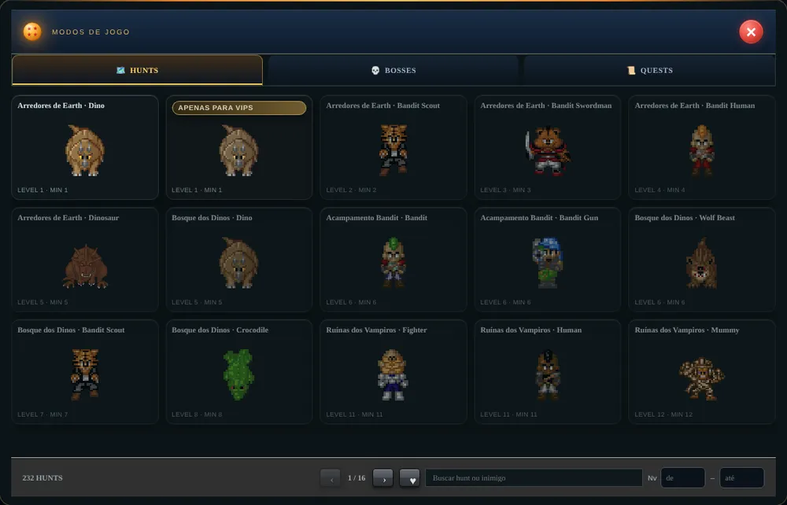

🛡️
Crie sua conta
Só e-mail e senha. Seus personagens ficam guardados no servidor: entre de qualquer aparelho e continue de onde parou.
O RPG idle multiplayer que roda direto no navegador. Escolha seu guerreiro, cace monstros enquanto faz outra coisa, fique mais forte a cada transformação e encontre outros jogadores andando pela mesma cidade.


Nada para baixar. Abra o link no celular ou no PC e comece. Seu progresso fica salvo na sua conta.
Só e-mail e senha. Seus personagens ficam guardados no servidor: entre de qualquer aparelho e continue de onde parou.
Dezenas de vocações, cada uma com estilo próprio: luta corpo a corpo, ataques à distância ou híbrido.
Entre numa hunt e o combate acontece sozinho. Configure magias e poções no automático e veja o XP e o loot subirem.
Volte para a cidade e veja outros jogadores andando ao seu lado, converse no chat e combine a próxima caçada.
Progressão longa, muita coisa para colecionar e uma cidade sempre cheia.
Quando você entra no PZ, aparece para todo mundo que está online. Cada um com seu personagem, andando em tempo real.
/online para ver quem está conectadoEscolha a área, quantos monstros puxar e quais magias usar. O combate roda automático, com cura e buffs no momento certo.

Comece nos arredores da cidade e vá avançando para ruínas, florestas e terras cada vez mais perigosas.

Cada guerreiro tem escala própria de dano e uma linha de transformações para desbloquear.
Tudo fica no banco de dados do servidor. Trocou de celular? É só entrar com o mesmo e-mail.
A interface se adapta à tela. No celular, use "Adicionar à tela inicial" para abrir como um app.
Sem download e sem cadastro chato. Abriu, criou a conta, já está caçando.
Atualizado direto do banco de dados. Será que seu nome entra aqui?
Não. Forgotten Lands roda no navegador, no celular ou no computador. É só abrir o link e jogar.
Sim. Sua conta e seus personagens ficam guardados no banco de dados do servidor, e o jogo salva sozinho enquanto você joga. Dá para entrar de outro aparelho com o mesmo e-mail e senha.
Todo mundo que está conectado aparece na cidade (PZ). Vocês se veem andando, conversam pelo chat e podem combinar caçadas. Digite /online no chat para ver quem está jogando.
O servidor dorme quando ninguém está jogando. Na primeira visita depois de um tempo ele pode levar até um minuto para acordar; depois disso fica rápido.
A recuperação por e-mail ainda não está disponível. Fale com o administrador do servidor para recuperar sua conta.
Não. O jogo é gratuito e feito por fãs, sem fins comerciais.
Crie seu personagem agora e seja o primeiro do ranking.
⚔ Começar a jogar